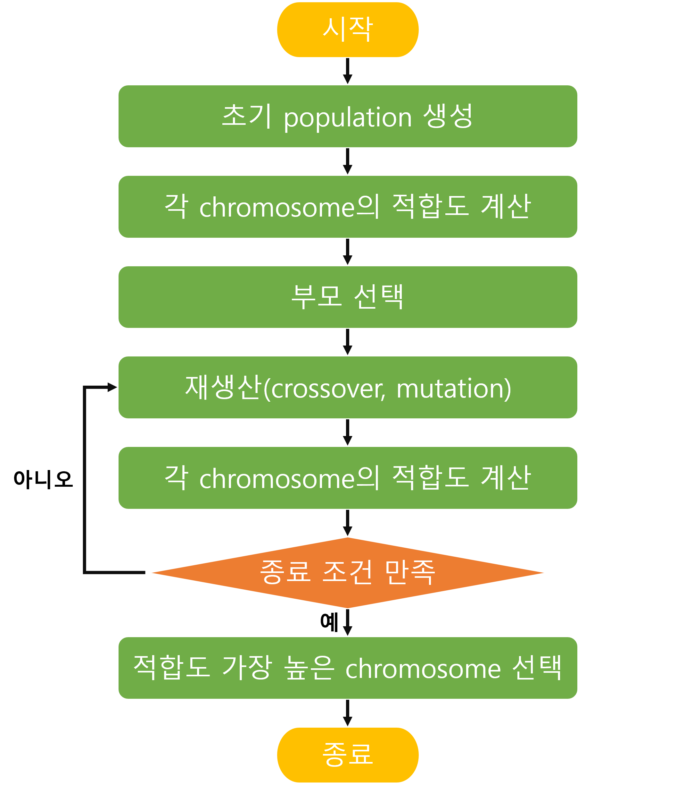
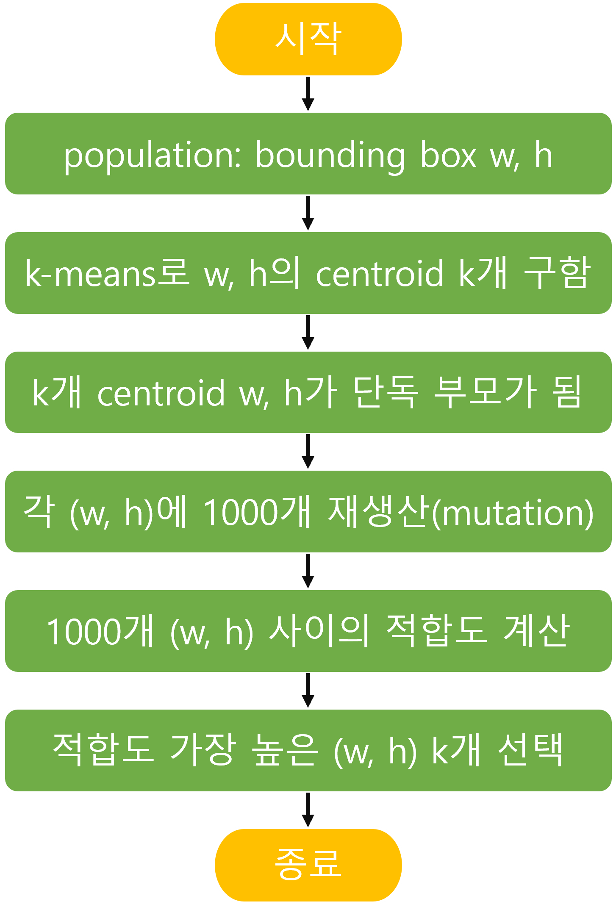

본 포스트에서는 YOLOv5에서 anchor를 선정하는 방법에 대해서 알아보겠습니다.
목차
동기
YOLOv5는 Glenn Jocher가 Github을 통해 발표한 모델입니다. 그는 Yolov5 이전에 Pytorch 버전의 YOLOv3 코드를 작성해서 Github에 공개 한 적이 있습니다. 이 때, 많은 사람들이 custom data set을 학습하며 올린 이슈를 보고 그는 사람들이 학습하고자 하는 dataset의 bounding box 가로 세로 비율이 COCO dataset bounding box의 가로 세로 비율과 많이 다르다는 사실을 발견하게 됩니다. 이 문제를 해결하기 위해, 그는 그 당시에 anchor box를 선정할 때 많이 쓰이던 k-means에 genetic algorithm을 추가적으로 접목시키고, 이 모든 과정을 자동으로 수행해주는 autoanchor를 YOLOv5에 소개합니다. 이에 관한 내용은 아래 링크의 인터뷰에서 더 자세히 확인하실 수 있습니다.
https://www.youtube.com/watch?v=O4jOqVqyAo8
Genetic Algorithm
Genetic Algorithm(GA)는 진화 과정에서 착안한 문제 해결 방법입니다. GA를 이해하기 위해서 필요한 용어에 대해 먼저 살펴보겠습니다.
- Population: 주어진 문제에 대한 해결 방법 집합
- Chromosome: 염색체. 유전자로 이루어져 있습니다. 하나의 문제 해결 방법을 의미합니다.
- Crossover: 부모의 유전자를 사용하여 자손이 생성됩니다.
- Mutation: 유전자 일부가 변화합니다.
- 적합도: 해당 문제에 대해 염색체에 해당하는 해결 방식이 얼마나 적합한지를 의미합니다.
GA는 아래의 순서로 수행이 됩니다.

YOLOv5에서 사용된 GA
yolo에서는 위에서 살펴본 GA 과정이 아래와 같이 변형되어 진행됩니다.

- YOLOv5의 population은 bounding box의 가로 세로가 됩니다. 그리고 GA를 통해 가장 적합한 anchor box의 가로 세로 크기를 구하려고 합니다.
- 부모를 선택할 때에는 k-means를 사용합니다. k개의 centroid(가로, 세로)를 구한 뒤, 각 centroid가 단독 부모가 됩니다.
- k개의 단독 부모에 대해 crossover는 하지 않고 generation 하고자 하는 수만큼 mutation만 합니다. default로는 각 k개 부모마다 1000개의 (가로, 세로)를 mutation합니다.
- 재생산한 1000개 (w, h) 사이의 적합도를 계산해서 가장 높은 하나를 선택합니다. 결국 k개의 (w, h)가 선택되는데, 이게 YOLOv5에서 사용하는 anchor box가 됩니다.
Autoanchor
dataloader를 만든 후 학습에 들어가기 전, 현재 anchor가 현재 데이터에 적합한 anchor인지 check_anchors를 통해 확인합니다. 이 함수 내부에서 Autoanchor가 수행됩니다.
|
|
현재 anchor가 적합한 anchor인지 판별한는 데에는 아래의 metric이 사용됩니다. 여기서 wh는 전체 bounding box의 [가로, 세로] array이고, k는 현재 anchor의 [가로, 세로] array입니다.
|
|
-
torch.min(r, 1 / r): bounding box의 가로, 세로를 각 anchor box의 가로 세로로 나누어 비율을 구합니다. (bbox 갯수, anchor 갯수, 2)의 shape을 가집니다. -
x = torch.min(r, 1 / r).min(2)[0]: bounding box의 anchor box에 대한 가로 세로 비율 중 더 작은 것을 선택합니다. 즉 bounding box마다 각 anchor에 대한 비율을 하나씩 갖게 됩니다. (bbox갯수, anchor 갯수)의 shape을 가집니다. -
best = x.max(1)[0]: bounding box는 가장 비율이 높은 anchor 하나를 선정합니다. best는 가장 비율이 높은 anchor와의 비율 값 array입니다. (bbox 갯수)의 shape을 가집니다. -
aat = (x > 1 / thr).float().sum(1).mean() -
bpr = (best > 1 / thr).float().mean()
bpr이 0.98보다 작으면 k_mean_ahcnors 함수를 통해 새로운 anchor를 만들어줍니다.
|
|
kmean_anchors에서는 먼저 k-means로 bounding box에서 k개의 centroid를 구해줍니다.
|
|
centroid를 구했으면 그 centroid를 사용해서 mutatation을 한 다음 anchor_fitness를 통해 적합도를 계산해 줍니다. 위에서 사용된 것과 동일하게 가로, 세로 비율을 고려한 동일한 metric이 사용됩니다.
|
|
mutation은 gen갯수만큼 mutation을 해 주는데 default는 1000개입니다. 1000개의 mutation을 하고 그 중 가장 적합도가 높은 것을 anchor로 반환합니다.
|
|